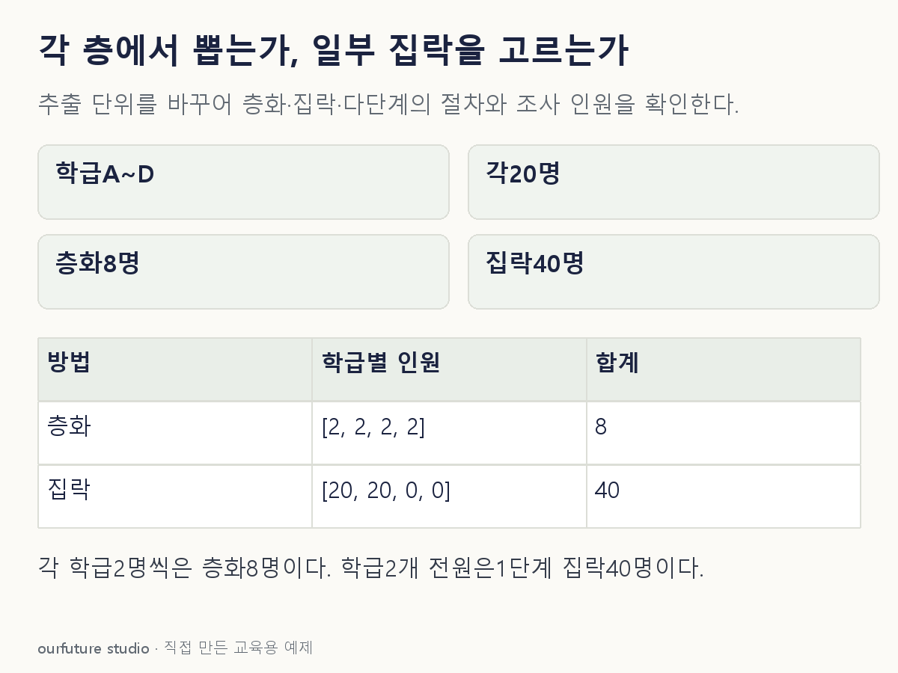

조건을 바꾸며 확인하기
학급과 학생을 정한 절차로 무작위 추출한다. 최적 배분·가중 추정·설계효과·실제 명단 추출은 수행하지 않는다.
설명 그림과 비교하기
아래 그림과 표는 고정된 설명 예제입니다. 기본·변형 중 어떤 조건인지 캡션을 읽고, 바꾼 입력의 결과는 계산 칸에서 확인하세요.

같은 문제를 직접 골라 보기
4개 학급 각 20명에서, 모든 학급마다 무작위로 2명씩 추출한다.
조건을 더 바꾸면?
학급 두 개를 무작위로 골라 그 안의 40명 전원을 조사한다면?
변형 풀이 확인
학급을 집락으로 하는 1단계 집락추출이다.
모든 학급에서 일부를 뽑는 대신 일부 학급을 고르고 그 구성원 전부를 조사한다.
각 층의 일부인지, 일부 집락의 전부인지 읽는다.